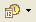

| Tool Button | Name/Function |
| Create a new Theme | |
| Save | |
| Open an existing theme | |
| |
Undo and Redo |
| Edit/Animate Selection | |
| Create a new sis-package | |
| Launch Third Party Icons Definition Tool | |
| Search a screen element | |
| Locate the selected files on the Disk | |
| Drop-down zoom menu | |
| Zoom in and Zoom out | |
| S60 platform and device selector | |
| Resolution | |
| Switch to Portrait or Landscape mode | |
| Start screen animation | |
| Start animation for selection | |
| Pause animation | |
| Stop animation | |
|  |
Set animation speed |